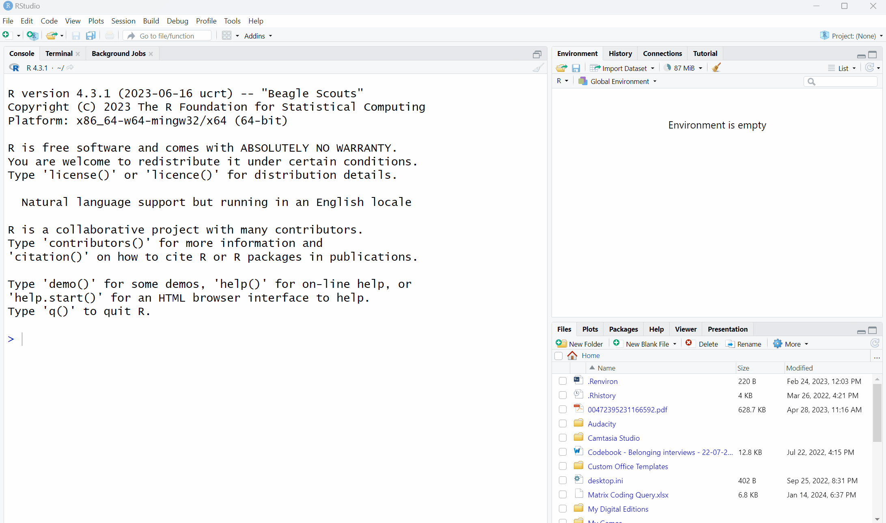
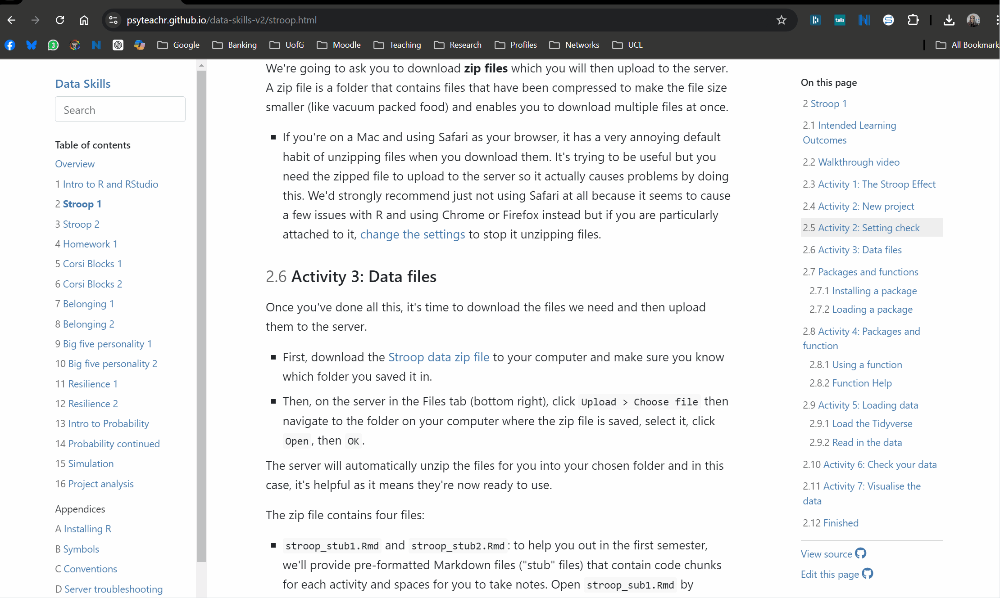
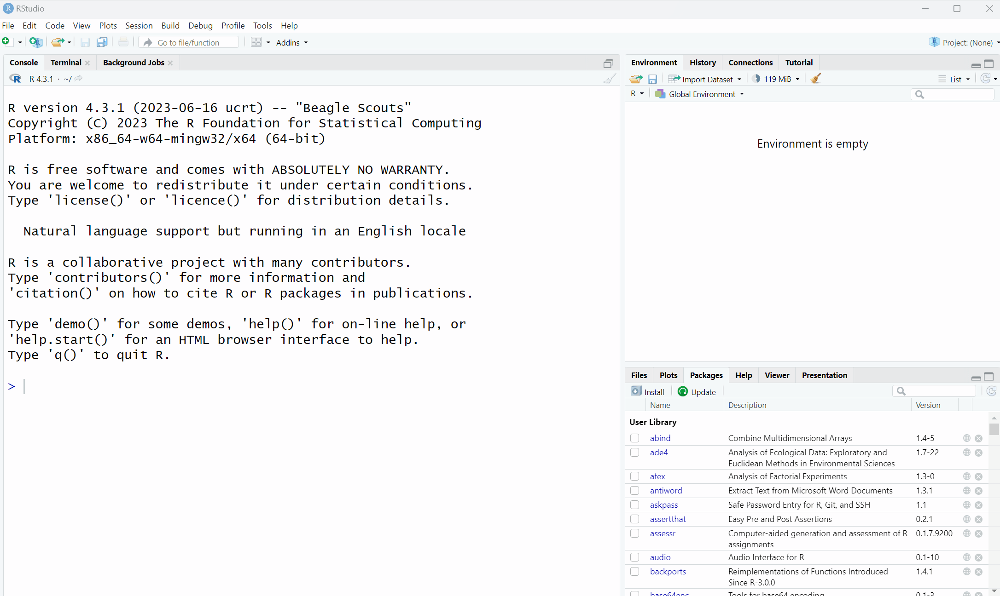
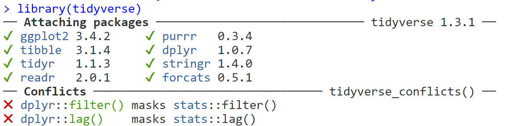
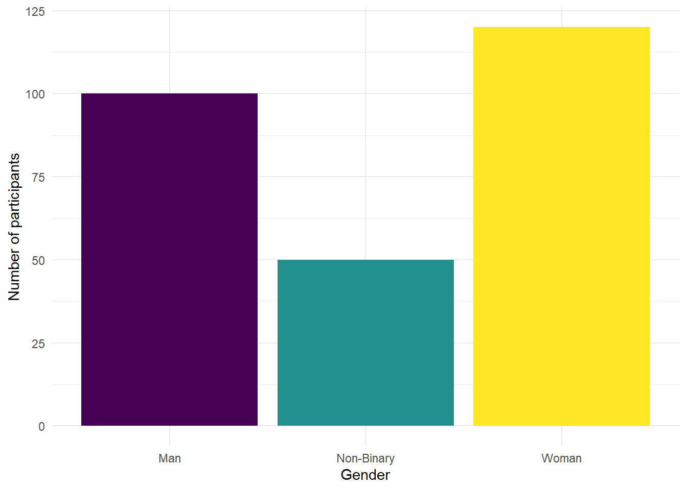
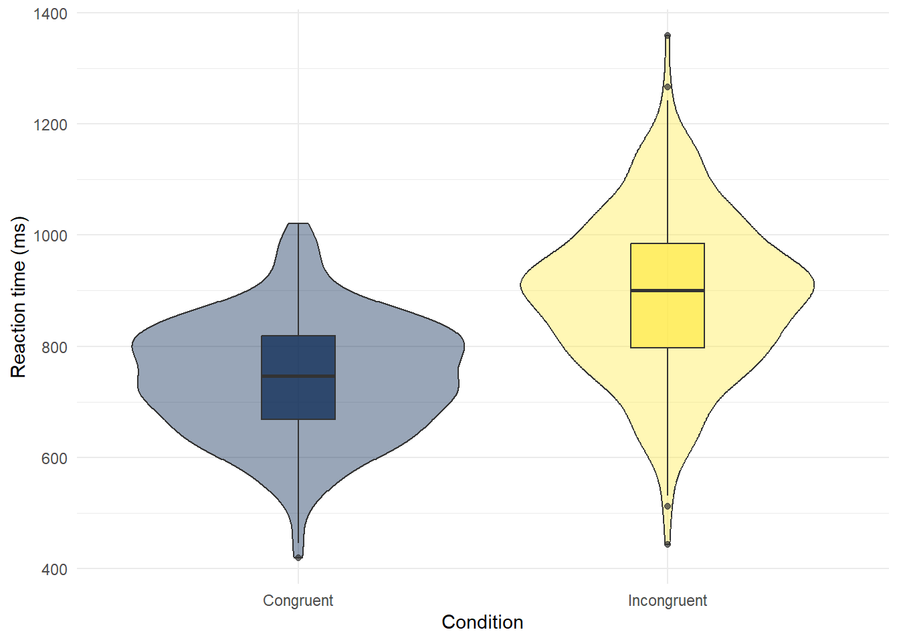

2 Stroop 1
2.1 Intended Learning Outcomes
By the end of this chapter you should be able to:
- Explain what the Stroop effect is and how is it measured
- Load and use packages and functions in R
- Load data using
read_csv() - Check data using
summary(),str(), and visual methods
2.2 Walkthrough video
There is a walkthrough video of this chapter available via OneDrive. We recommend first trying to work through each section of the book on your own and then watching the video if you get stuck, or if you would like more information. This will feel slower than just starting with the video, but you will learn more in the long-run. Please note that there may have been minor edits to the book since the video was recorded. Where there are differences, the book should always take precedence.
2.3 Activity 1: The Stroop Effect
In this chapter and the next chapter, we’re going to develop your data skills by using data from one of the most famous experiments in psychology: The Stroop Effect.
- First, take part in this online version of the Stroop test. It only takes a few minutes to complete. You need to be on a device with a keyboard.
- Second, read the Wikipedia summary of the Stroop Effect and how it is used in psychological research.
- Finally, answer the following questions. Please note that your responses will not save in the browser - if you want to save them, make a note of them somewhere.
- What does the Stroop Effect primarily measure?
The Stroop Effect primarily measures cognitive interference, which occurs when the processing of a specific stimulus feature impedes the simultaneous processing of a second stimulus attribute.
- What is one possible explanation for the Stroop Effect?
The Stroop Effect is often explained by the theory of automaticity, which suggests that reading—the task of recognizing words—has become an automatic process for most individuals, and this automatic reading process interferes with the task of naming the color.
- In a typical Stroop test, trials (where the color of the ink matches the word) are completed faster than trials (where the color of the ink does not match the word).
Answer: congruent, incongruent
In a typical Stroop test, there are two types of tasks - congruent and incongruent.
Congruent tasks are those where the color of the ink matches the word. For example, the word “BLUE” is printed in blue ink. In this case, the visual color and the semantic information (the meaning of the word) align or are “congruent.”
Incongruent tasks, on the other hand, are those where the color of the ink does not match the word. For example, the word “BLUE” might be printed in red ink. Here, the visual color and the semantic information are in conflict or are “incongruent.”
Participants in a Stroop test are typically asked to name the color of the ink, not the word. This is where the interference comes in. Reading words is such an automatic process for most literate adults that the participant’s brain automatically reads the word before recognizing the color of the ink. This causes a delay in the response time for incongruent tasks, as the brain has to overcome the initial automatic response to read the word.
Therefore, congruent tasks are typically completed faster than incongruent tasks in a Stroop test. The difference in response times is the measure of the Stroop effect, which demonstrates the nature of cognitive interference and the automatic process of reading.
2.4 Activity 2: New project
- Open up RStudio on your computer.
To help keep things organised, we’ll make a new project for the Stroop experiment chapters (this week and next week). To make a new project, the steps are almost the same as what you did in the first chapter with the exception that you don’t need to make the PSYCH1A and Data Skills folders this time, you just need to find them:
- Click File then “New project”;
- Then, click on the first option in the list “New Directory”;
- Then, click “New Project”;
- Then you are given the opportunity to name your project and select which folder it should be stored in. First in the “Directory name” box, type “Stroop Effect”;
- Click browse and find your PSYCH1A and then Data Skills folder and click “Open”.
- Finally, click “Create project”.
2.5 Activity 3: Setting check
Now you need to download the data files we’re going to use. Before you do, we need to check some settings on your browser because the biggest issue new students face with R is not learning to code, it’s knowing where your files are.
- First, if you’re not 100% sure, check your browser settings to make sure you know where files you download are going to go. If you’re on Windows, there’s a good chance the default will be the Downloads folder. However, this folder can sometimes end up a dumpster fire of files so it can be better to change your settings so that your browser asks you where to save each download to so that you have to consciously choose each time. This website explains how to check and change these settings for all different browsers.
We’re going to ask you to download zip files. A zip file is a folder that contains files that have been compressed to make the file size smaller (like vacuum packed food) and enables you to download multiple files at once.
- If you’re on a Mac and using Safari as your browser, it has a very annoying default habit of unzipping files when you download them. It’s trying to be useful but it means you don’t learn about different file types and this is important. We’d strongly recommend just not using Safari at all because it seems to cause a few issues with R and using Chrome or Firefox instead but if you are particularly attached to it, change the settings to stop it unzipping files.
2.6 Activity 4: Data files
Once you’ve done all this, it’s time to download the files we need and unzip them.
- First, download the Stroop data zip file to your computer and save it in your Stroop Effect project folder.
- In RStudio, in the Files tab, click on “stroop_data.zip”. This will open up the zip folder.
- If you’re using a Mac double-click on the zip folder and it will automatically unzip them into a regular folder. If you’re on Windows, you need to click “Extract all” then ok.
We then need to make sure that the unzipped files are in the main project folder, not in a sub-folder. If you’re comfortable with computers, move the files over and delete any other copies including the zip file with whichever method your prefer.
If you’re not sure how to do this, follow these instructions.There are other, potentially faster ways of achieving this, but this method will work for both Mac and Windows.
- In the RStudio Files tab, navigate back to the Stroop Effect folder.
- Then open the new unzipped stroop_data folder.
- Select the four files by ticking the check boxes next to them.
- Click “More” then “Move” then navigate to the Stroop Effect folder and click “Open”.
- Finally, to keep everything tidy, navgiate back to the Stroop Effect folder and delete both the stroop_data folders (the zip folder and the regular folder) as you don’t need them. This means you only have one copy of each file so you can’t use the wrong one.
- Importantly, all your files should all be in the main project folder. If you’re unsure about this, attend a GTA session or office hours. If you can get this first step right, it avoids a lot of issues down the line.

The zip file contains four files:
stroop_stub1.Rmdandstroop_stub2.Rmd: to help you out in the first semester, we’ll provide pre-formatted Markdown files (“stub” files) that contain code chunks for each activity and spaces for you to take notes. Openstroop_sub1.Rmdby clicking on it in the Files tab and then edit the heading to add in your GUID and today’s date.participant_data.csvis a data file that contains each participant’s anonymous ID, age, and gender. This data is in wide-form which means that all of the observations about one subject are in the same row. There are 270 participants, so there are 270 rows of data.
| participant_id | gender | age |
|---|---|---|
| 1 | Man | 20 |
| 2 | Man | 20 |
| 3 | Man | 27 |
| 4 | Man | 19 |
| 5 | Man | 23 |
| 6 | Man | 28 |
Participant info data
experiment_data.csvis a data file that contains each participant’s anonymous ID, and mean reaction time for all the congruent and incongruent trials they completed. This data is in long-form where each observation is on a separate row so for the Stroop experiment, each participant has two rows because there are two observations (one for congruent trials and one for incongruent trials). So there are 270 participants, but 540 rows of data (270 * 2).
You may be less familiar with this way of organising data, but for many functions in R your data must be stored this way. This semester, we’ll provide you with the data in the format it needs to be in and next semester we’ll show you how to transform it yourself.
| participant_id | condition | reaction_time |
|---|---|---|
| 1 | congruent | 847.0311 |
| 1 | incongruent | 910.3084 |
| 2 | congruent | 748.1366 |
| 2 | incongruent | 967.4626 |
| 3 | congruent | 786.2370 |
| 3 | incongruent | 975.7407 |
Before we load in and work with the data files we need to explain a few more things about how R works.
2.7 Packages and functions
When you install R you will have access to a range of functions including options for data wrangling and statistical analysis. The functions that are included in the default installation are typically referred to as base R and you can think of them like the default apps that come pre-loaded on your phone.
One of the great things about R, however, is that it is user extensible: anyone can create a new add-on that extends its functionality. There are currently thousands of packages that R users have created to solve many different kinds of problems, or just simply to have fun. For example, there are packages for data visualisation, machine learning, interactive dashboards, web scraping, and playing games such as Sudoku.
Add-on packages are not included with base R, but have to be downloaded and installed from an archive, in the same way that you would, for instance, download and install PokemonGo on your smartphone. The main repository where packages reside is called CRAN, the Comprehensive R Archive Network.
There is an important distinction between installing a package and loading a package.
2.8 Activity 5: Install packages
This is like installing an app on your phone: you only have to do it once and the app will remain installed until you remove it. For instance, if you want to use PokemonGo on your phone, you install it once from the App Store or Play Store; you don’t have to re-install it each time you want to use it. Once you launch the app, it will run in the background until you close it or restart your phone. Likewise, when you install a package, the package will be available (but not loaded) every time you open up R.
For Level 1, the main package you need to use is named the”tidyverse” and it has functions to deal with data wrangling, summaries, and visualisation.
To install the tidyverse:
- In the Files pane in the bottom right, click “Packages”, then click “Install”.
- In the “Packages” box type “tidyverse”. It provide auto-complete suggestions to save you time. Click on “tidyverse” and then click install.
- It will start installing the package and produce a lot of text that might look like an error but isn’t. If you get a message that says something like
package ‘tidyverse’ successfully unpacked and MD5 sums checked, the installation was successful. If you get an error and the package wasn’t installed, come to office hours or a GTA session.
Now do the same but install the package “cowsay” and then rmarkdown.

2.8.1 Loading a package
This is done using the library() function. This is like launching an app on your phone: the functionality is only there when the app is launched and remains there until you close the app or restart. For example, when you run library(tidyverse) within a session, the functions in the package cowsay will be made available for your R session. The next time you start R, you will need to run library(tidyverse) again if you want to access that package.
2.9 Activity 6: Packages and function
As an example, let’s load the cowsay package that you installed above. The cowsay package is just for fun - it will print a message with an animal - but it’s useful to show you how packages work. To load a package, you use the function library() and include the name of the package you want to load in parentheses.
- In code chunk 1, type and run the below code to load the
cowsaypackage. If you can’t remember how to run code, take a look back at Chapter @ref(sec-run-code).
You’ll see library(cowsay) appear in the console. There’s no warning messages or errors so it looks like it has loaded successfully.
2.9.1 Using a function
Now you can use the function say(). A function is a name that refers to code that performs some sort of action.
- In code chunk 2, write and run the below code to use the function
say(). - If you get the error
could not find functionit means you have not loaded the package properly, try runninglibrary(cowsay)again and make sure everything is spelled exactly right.
______________
< Hello world! >
--------------
\
\
^__^
(oo)\ ________
(__)\ )\ /\
||------w|
|| ||After the function name, there is a pair of parentheses, which contain zero or more arguments. These are options that you can set. If you don’t give it any information, it will try and use the default arguments if it has them. say() has two main arguments with a default value: what the text says (default Hello world), and the animal the message is said by (default is a cat).
To look up all the various options that you could use with say(), run the following code in the console:
The help documentation can be a little hard to read - scrolling to the bottom and looking at the examples can help.
- In code chunk 2, add the below code to produce a different message and animal - below is an example but try your own.
2.9.2 Function Help
If you want more information about what a function does or how to use it, you can look at the help document. If a function is in base R or a package you have loaded, you can type ?function_name in the console to access the help file. At the top of the help it will give you the function and package name.
If the package isn’t loaded, use ?package_name::function_name. When you aren’t sure what package the function is in, use the shortcut ??function_name which will give you a list of all possible options.
- In the console, type and run the code for the different help options below. The reason you run the help code in the console not a code chunk is that you generally don’t want to save this code in your script.
Function help is always organised in the same way. For example, look at the help for ?cowsay::say. At the top, it tells you the name of the function and its package in curly brackets, then a short description of the function, followed by a longer description. The Usage section shows the function with all of its arguments. If any of those arguments have default values, they will be shown like function(arg = default). The Arguments section lists each argument with an explanation. There may be a Details section after this with even more detail about the functions. The Examples section is last, and shows examples that you can run in your console window to see how the function works.
Note
Use the help documentation to find the answers to this question:
- What is the first argument to the
meanfunction? `
2.10 Activity 7: Loading data
OK, let’s get back to looking at our data. In order to load and work with our Stroop data, we need to load another that very important package, the tidyverse.
2.10.1 Load the Tidyverse
tidyverse is a meta-package that loads several packages we’ll be using in almost every chapter in this book:
ggplot2, for data visualisationreadr, for data importtibble, for tablestidyr, for data tidyingdplyr, for data manipulationstringr, for stringsforcats, for factorspurrr, for repeating things
To use readr to import the data, we need to load the tidyverse.
- In code chunk 3, write and run the code to load the
tidyverse. When you run this code, you’re going to get something that at first glance might look like an error but it’s not, it’s just telling you which packages it has loaded.

2.10.2 Read in the data
Now we can read in the data. To do this we will use the function read_csv() that allows us to read in .csv files, which are a type of data file. There are also functions that allow you to read in .xlsx (Excel) files and other formats, however in this course we will only use .csv files.
First, we will create an object called dat that contains the data in the experiment_data.csv file. Then, we will create an object called ppt_info that contains the data in the participant_data.csv.
- In code chunk 4, write and run the below code to load the data files.
Important
In order to load the file successfully, the name of the file needs to be in double quotation marks and it must have the file extension .csv. If you miss this out, you’ll get the error message ...does not exist in current working directory. To fix it, make sure you’ve spelled the name of the file right and included the file extension.
Additionally, if you get the message could not find function "read_csv()" it means that you have not loaded the tidyverse - a common error is to write the code but not run it! To fix it, run the code that loads the tidyverse. Another reason you might see this message is if you’ve made a typo in the name of the function, so check that you’ve spelled read_csv exactly right.
2.11 Activity 8: Check your data
You should now see that the objects dat and ppt_info have appeared in the environment pane. Whenever you read data into R you should always do an initial check to see that your data looks like how you expected. There are several ways you can do this, try them all out to see how the results differ.
- In the environment pane, click on
datandppt_info. This will open the data to give you a spreadsheet-like view (although you can’t edit it like in Excel). - In the environment pane, click the small blue play button to the left of
datandppt_info. This will show you the structure of the object information including the names of all the variables in that object and what type they are. - In code chunk 5, write and run
summary(ppt_info)(and do the same fordat) - In code chunk 5, write and run
str(ppt_info)(and do the same fordat)
What is the mean age pf participants to 1 decimal place?
What is the mean overall reaction time to 1 decimal place?
2.12 Activity 9: Visualise the data
As you’re going to learn about more over this course, data visualisation is extremely important. Visualisations can be used to give you more information about your dataset, but they can also be used to mislead.
We’re going to look at how to write the code to produce simple visualisations in a few weeks, for now, we want to focus on how to read and interpret different kinds of graphs. Please feel free to play around with the code and change TRUE to FALSE and adjust the values and labels and see what happens but do not worry about understanding this code for now. Just copy and paste it.
- Copy, paste and run the below code in code chunk 6 to produce a bar graph that shows the number of men, women, and non-binary participants in the dataset.
ggplot(ppt_info, # data we're using
aes(x = gender, # variable we want to show as bars
fill = gender)) + # make bars different colours
geom_bar(show.legend = FALSE) + # add bar plot & turn off redundant legend
scale_x_discrete(name = "Gender") + # edit x-axis label
scale_fill_viridis_d(option = "D") + # colour-blind friendly
scale_y_continuous(name = "Number of participants")+ # edit y-axis label
theme_minimal() # add a theme
Are there more men, women, or non-binary participants in the sample?
- Copy, paste, and run the below code in code chunk 7 to create violin-boxplots of reaction times for each condition.
# make plot
ggplot(dat, # data we're using
aes(x = condition, # grouping variable (IV)
y = reaction_time, # measurement (DV)
fill = condition)) + # make bars different colours
geom_violin(show.legend = FALSE, # turn off redundant legend for colour
alpha = .4) + # make violin a bit transparent
geom_boxplot(width = .2, # adjust size of boxplot
show.legend = FALSE, # turn off redundant legend for colour
alpha = .7)+ # make boxplots a little transparent
scale_x_discrete(name = "Condition", # edit x-axis labels
labels = c("Congruent", "Incongruent")) +
scale_y_continuous(name = "Reaction time (ms)") + # edit y-axis labels
theme_minimal() + # add a theme
scale_fill_viridis_d(option = "E") # colour-blind friendly colours
- The violin (the wavy line) shows density. Basically, the fatter the wavy shape, the more data points there are at that point. It’s called a violin plot because it very often looks (kinda) like a violin.
- The boxplot is the box in the middle. The black line shows the median score in each group. The median is calculated by arranging the scores in order from the smallest to the largest and then selecting the middle score.
- The other lines on the boxplot show the interquartile range. There is a really good explanation of how to read a boxplot here.
Which condition has the longest median reaction time?
2.13 Finished
Finally, try knitting the file to HTML. And that’s it, well done! It’s absolutely ok if you don’t understand 100% of what you’re doing at this point, we’re going to repeat everything you’ve done with different datasets so you will get lots of practice and we’re going to build it up very slowly. Also remember that you can attend GTA sessions and office hours for help with data skills - you don’t have to have specific questions, some students just like to use the GTA sessions as the time to work through the data skills book so that if they need help, they’re already there.
Remember to make a note of any mistakes you made and how you fixed them, any other useful information you learned, save your Markdown, and quit R completely.